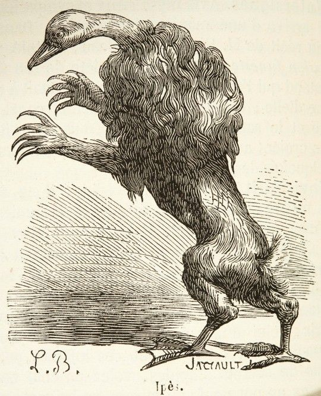
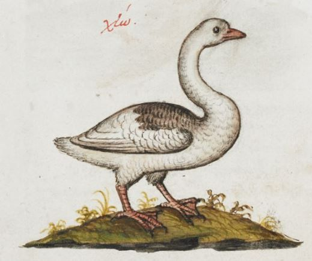
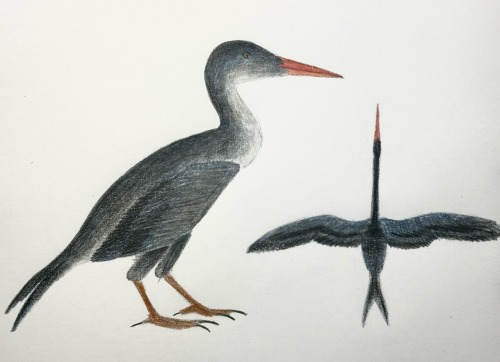
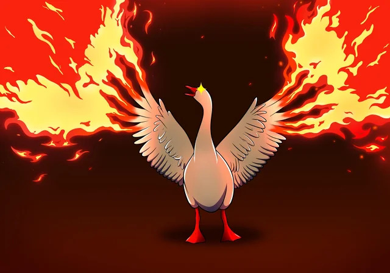
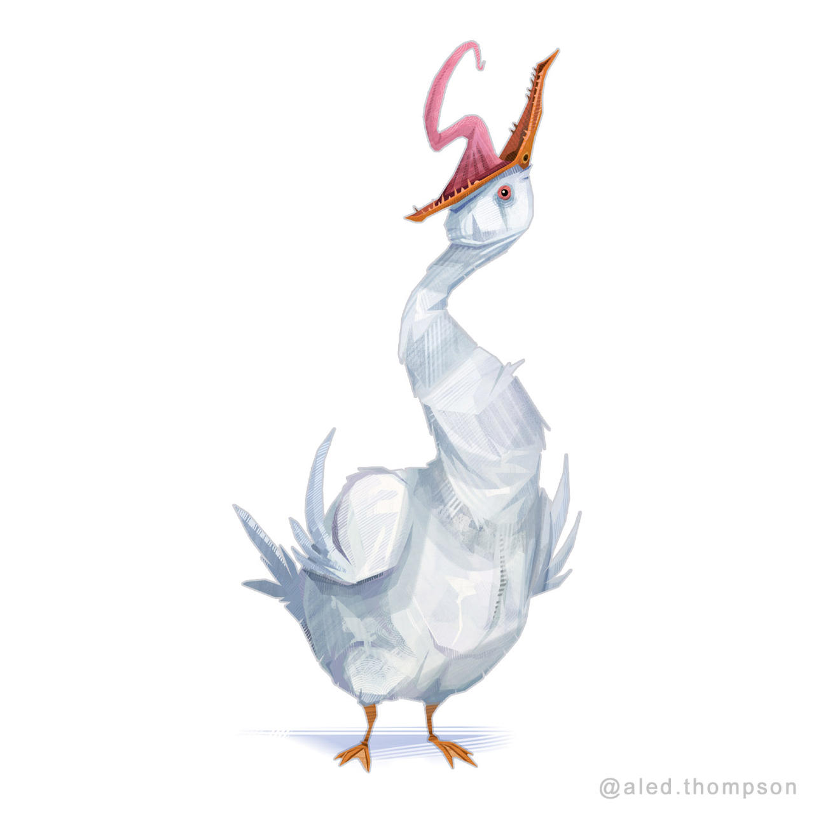
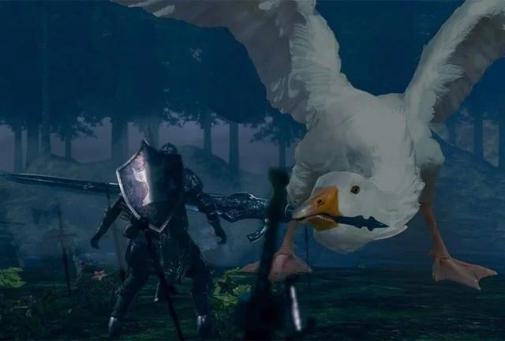
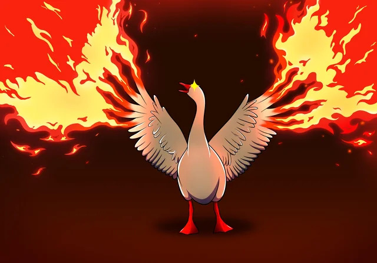
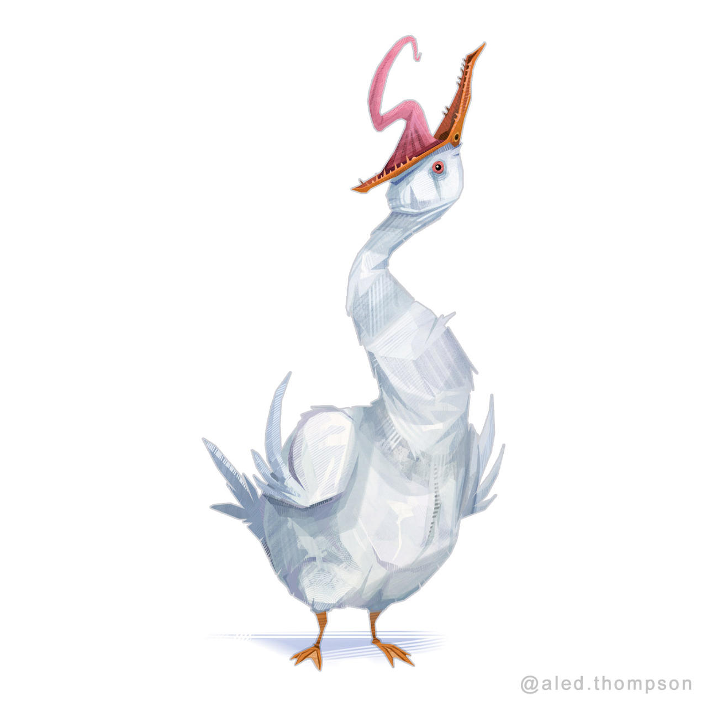
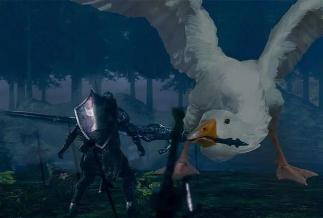

Origins Of Geese
Geese are actually an alien species. They come from a
planet called Zephenyx, part of the Nebuchadnezzar System.
Zephenyx was sadly destroyed by the rails in The Great Interga-
lactic. It was imploded with a category 12-S Photon Inverter
Beam, shot by the rails' Griffith Destroyers. Thankfully, by
this point, the geese were already a large space faring species.
early on in the geese evoulation, planet Zephenyx was
rich in oxygen and had a relatively tropical climate. This is
where they had developed their true form. Because of climate
Changes, the geese evovled to allow themselves to morph parts
of their body(this later evolved into full shapeshifting capabil-
ities). They began to reject their true form in lieu of a smaller
more "bird like" frame. While their true form was not lost, they
rarely use this form now.


Geese were not the only inteligent species to evolve on the
planet. Ducks were the other major species on the planet. Both the
Geese and the Ducks evolved from a common ancestor, The Vegavis. The
Vegavis was a small lake faring bird that would feed on small fish and
crestaetions. They are now extinct and lived about 40 million years ago.
The earliest forms of the Geese and Ducks would evolve from the Vegavis
about 5 millions years ago.

After the Destruction Of Planet Zephenyx, the Geese decided to become
a space faring species ratehr then find a new planet to settle on. Because
of this the geese are now one of the largest and most advanced species in
the galaxy. they inhabit giant space stations they built in the void of space
and travel around in these conqouring other species. the geese are currently
a neutral force in the galaxy.
 




